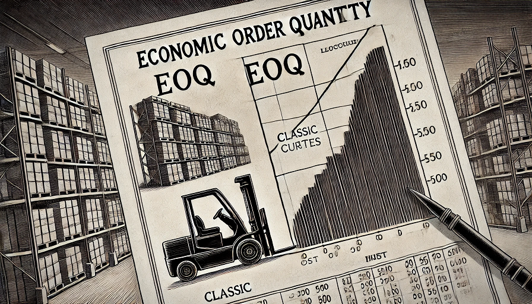
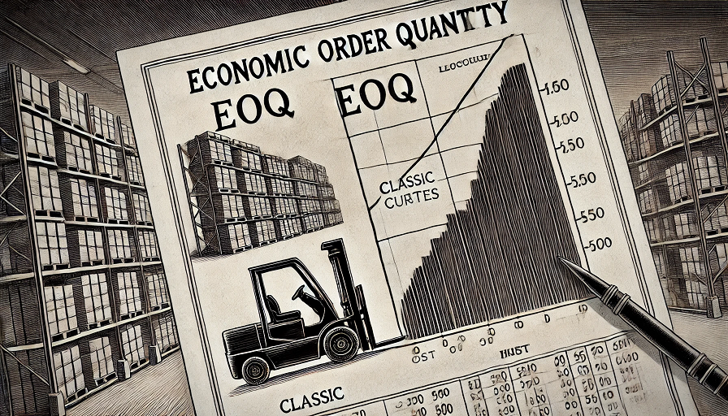

Applicazione per il calcolo del lotto economico di acquisto - EOQ

Calcolo del lotto economico di acquisto, dal menù utilizzare il pulsante Strumenti per
inserire i parametri ed eseguire il calcolo.
Applicazione per il calcolo del lotto economico di acquisto - EOQ
